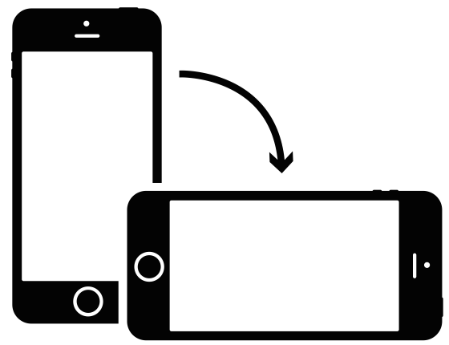

Grand Conseil: résultats définitifs par commune
Détail par commune
Survoler ou toucher du doigt une commune pour voir le détail
Grand Conseil, résultats définitifs
Conseil d’Etat, résultats définitifs (18h40)
Source: Etat de Genève, développement: Paul Ronga
Librairies utilisées: d3js,
topojson,
d3-parliament,
d3-legend,
jQuery.
Icône (version mobile): Kelig Le Luron, The Noun Project